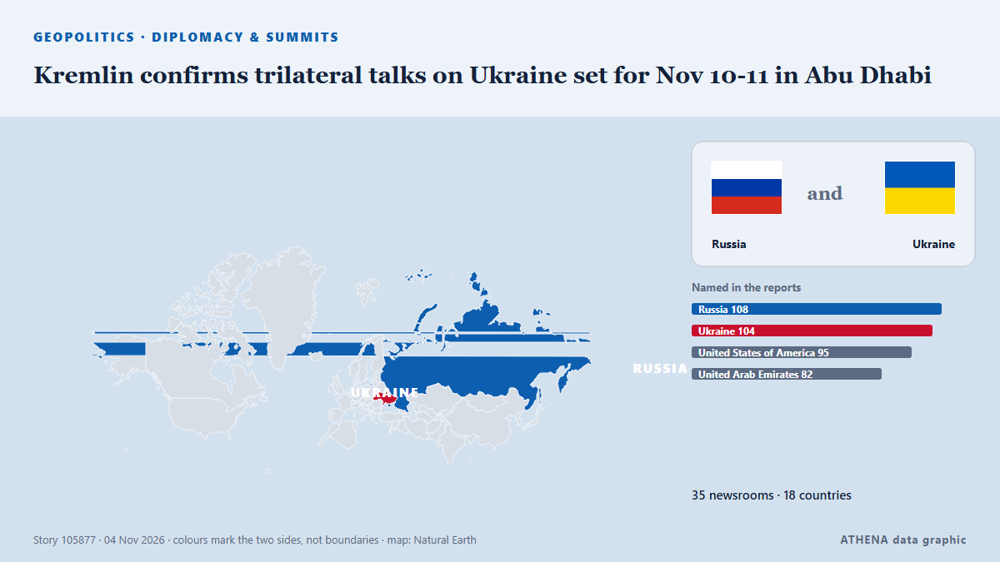

Kremlin confirms trilateral talks on Ukraine set for Nov 10-11 in Abu Dhabi

The United States will bring together delegations from Ukraine and Russia in Abu Dhabi on November 10-11 to discuss ending Russia's conflict with Ukraine, post-conflict security agreements and… από CGTN (World)
Αναφέρθηκε ανεξάρτητα από 35 μέσα σε 18 χώρες από τις 2 Νοε, πρώτο το CGTN (World)· η κάλυψη κορυφώνεται. Το ATHENA εκτιμά τον κίνδυνο αυξημένο (4.2/10), κυρίως λόγω της σοβαρότητάς του και της εμβέλειάς του. Βεβαιότητα 91% (υψηλή): το επιβεβαιώνουν 35 ανεξάρτητα μέσα, μέση αξιοπιστία 77%. Μέσα ανά χώρα: Κίνα (7), Ουκρανία (4), Τουρκία (4). Κάλυψη: 2 Νοε έως 3 Νοε, 13 ώρες.
Γιατί έχει σημασία: Η πλήρους κλίμακας εισβολή της Ρωσίας στην Ουκρανία ξεκίνησε τον Φεβρουάριο του 2022. Η σελίδα παρακολουθεί τις μάχες, τα πλήγματα σε υποδομές και τη διπλωματία γύρω από τον πόλεμο, όπως τα καλύπτουν μέσα από όλο τον κόσμο.
Τι άλλαξε: 31 νέες αναφορές από 25 μέσα στο 24ωρο έως 4 Νοε.
Πρώτη διατύπωση: US to hold trilateral talks with Ukraine, Russia in Abu Dhabi next week-US official
Οι τίτλοι των ειδήσεων παρουσιάζονται στα αγγλικά, όπως δημοσιεύτηκαν.
Με μια ματιά
Επιλέγεται, βαθμολογείται και γράφεται από τη δημοσιευμένη μεθοδολογία του ATHENA. Κανένας συντάκτης δεν παρεμβαίνει σε μεμονωμένα γεγονότα. Πώς παράγεται ›
| 02 Nov 23:00 UTC | 19 |
|---|---|
| 03 Nov 01:00 UTC | 3 |
| 03 Nov 03:00 UTC | 3 |
| 03 Nov 05:00 UTC | 2 |
| 03 Nov 07:00 UTC | 5 |
| 03 Nov 09:00 UTC | 8 |
| 03 Nov 11:00 UTC | 5 |
| 03 Nov 13:00 UTC | 2 |
| 03 Nov 15:00 UTC | 2 |
| 03 Nov 17:00 UTC | 3 |
| 03 Nov 19:00 UTC | 0 |
| 03 Nov 21:00 UTC | 1 |
| 03 Nov 23:00 UTC | 0 |
| 04 Nov 01:00 UTC | 0 |
| 04 Nov 03:00 UTC | 2 |
| 02 Nov 23:34 UTC | 1.2 |
|---|---|
| 03 Nov 04:09 UTC | 3.4 |
| 03 Nov 15:58 UTC | 3.8 |
| 04 Nov 04:13 UTC | 4.2 |
Γιατί αυτοί οι αριθμοί
Σημασία
Κίνδυνος
Βεβαιότητα
Η κάλυψη — ποιος το ανέφερε και πότε
ο τίτλος όπως δημοσιεύτηκε · ανοίγει το πρωτότυπο- CGTN (World) · ΚίναUS to mediate Ukraine-Russia talks in Abu Dhabi, US envoy says
- The Straits Times · ΣιγκαπούρηUS to mediate trilateral talks with Ukraine, Russia in Abu Dhabi next week, says US envoy
- CGTN (World) · ΚίναUS to host trilateral talks with Russia, Ukraine next week in UAE
- investingLive (ForexLive) · INTUS to host second Ukraine-Russia trilateral talks in Abu Dhabi on November 10 to 11
- Ukrainska Pravda (English) · ΟυκρανίαUkraine and Russia will hold talks in Abu Dhabi with US mediation – Witkoff
- Arab News · Σαουδική ΑραβίαUS to hold trilateral talks with Ukraine, Russia in Abu Dhabi next week, US official says
- The National · Ηνωμένα Αραβικά ΕμιράταRussia-Ukraine talks to take place in Abu Dhabi this month, US says
- Anadolu Agency (English) · ΤουρκίαUS to mediate Ukraine-Russia working-level peace talks in Abu Dhabi on Nov. 10-11
- Al-Monitor · Ηνωμένες ΠολιτείεςUS to mediate trilateral talks with Ukraine, Russia in Abu Dhabi next week, US envoy says
- Fox News (World) · Ηνωμένες ΠολιτείεςUS will mediate upcoming Ukraine-Russia talks in Abu Dhabi, Witkoff says
- Kyiv Independent · ΟυκρανίαWitkoff reveals location, date for new trilateral peace deal negotiations
- Xinhua (English) — page reader · ΚίναUrgent: U.S. to host trilateral talks with Russia, Ukraine in Abu Dhabi on Nov. 10-11, says Witkoff
- TASS (English) · ΡωσίαRussia-US-Ukraine talks to be held in Abu Dhabi on November 10-11, Witkoff says
- Euractiv · ΒέλγιοWitkoff announces Abu Dhabi talks with Ukraine, US, Russia
- The New Arab · INTUS to mediate Ukraine-Russia talks in Abu Dhabi next week: envoy
- TRT World · ΤουρκίαUS to mediate Russia-Ukraine peace talks in Abu Dhabi this November
- APA (English) · ΑζερμπαϊτζάνRussia-Ukraine talks to be held in Abu Dhabi on November 10-11
- TASS (English) · ΡωσίαWitkoff, Kushner expected to represent US at trilateral talks in Abu Dhabi — Reuters
- China Daily — page reader · ΚίναUS to host trilateral talks with Russia, Ukraine in Abu Dhabi
- The Jerusalem Post · ΙσραήλUS to mediate trilateral talks with Ukraine, Russia in Abu Dhabi next week, US envoy says
- Xinhua (English) — page reader · ΚίναU.S. to mediate new Ukraine-Russia talks in Abu Dhabi next week
- The Hill · Ηνωμένες ΠολιτείεςUS to mediate Ukraine-Russia talks in Abu Dhabi next week, Witkoff says
- APA (English) · ΑζερμπαϊτζάνWitkoff and Kushner expected to represent US at Ukraine talks
- Xinhua (English) — page reader · ΚίναXinhua News | U.S. to host trilateral talks with Russia, Ukraine in Abu Dhabi on Nov. 10-11, says Witkoff
- Türkiye Today · ΤουρκίαUS sets Ukraine-Russia peace talks for Nov. 10-11 in Abu Dhabi
- CNA (Channel NewsAsia) · ΣιγκαπούρηUS to mediate trilateral talks with Ukraine, Russia in Abu Dhabi next week, US envoy says
- News of Bahrain · ΜπαχρέινUkraine, US and Russia to hold trilateral talks in Abu Dhabi next week
- Kyiv Post · ΟυκρανίαUS Sets Ukraine-Russia Talks in Abu Dhabi as Trump Pushes for Peace Deal
- Meduza (English) · ΡωσίαTrilateral talks between Russia, Ukraine and US set for November 10–11 in Abu Dhabi
- The Moscow Times · ΡωσίαU.S.-Mediated Ukraine Peace Talks to Resume in Abu Dhabi Next Week
- The Straits Times · ΣιγκαπούρηKremlin confirms trilateral Ukraine peace talks in Abu Dhabi next week
- APA (English) · ΑζερμπαϊτζάνKremlin confirms Russia-US-Ukraine talks in Abu Dhabi on November 10–11
- Al-Monitor · Ηνωμένες ΠολιτείεςKremlin confirms trilateral Ukraine peace talks in Abu Dhabi next week
- Free Malaysia Today · ΜαλαισίαKremlin confirms trilateral Ukraine peace talks in Abu Dhabi next week
- Anadolu Agency (English) · ΤουρκίαRussian delegation to arrive in Abu Dhabi on Nov. 10-11 for trilateral Ukraine talks: Kremlin
- Ukrainska Pravda (English) · ΟυκρανίαPutin aide Medinsky to head Russian delegation at trilateral talks in Abu Dhabi
- Gulf News · Ηνωμένα Αραβικά ΕμιράταAbu Dhabi to host US-brokered Russia-Ukraine peace talks on November 10-11
- Asia-Plus (English) · ΤατζικιστάνUS, Russia and Ukraine to hold new round of talks in Abu Dhabi on November 10–11
- AzerNews · ΑζερμπαϊτζάνUkraine, Russia and US to hold trilateral talks in Abu Dhabi on November 10-11
- China Daily — page reader · ΚίναKremlin confirms trilateral talks on Ukraine in Abu Dhabi on Nov 10-11